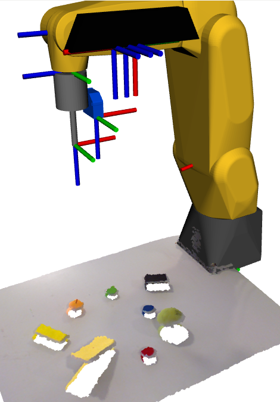

To command the FANUC robot to plan and execute the bin-picking process it is necessary to install ROS-Industrial. ROS-Industrial is an open-source project that extends the sophisticated capabilities of ROS software by bringing advanced robotics software to the industrial automation domain. This ROS extension contains libraries, tools, drivers and virtual models (URDF) for industrial hardware. The instruction for the installation of ROS-Industrial can be found here.
Additionally, the ROS MoveIt metapackage and the installation of the drivers on the controller are also required for the correct manipulation of the robot used in this project. MoveIt! is state of the art software which includes the tools and packages required for mobile manipulation.
It is now possible to develop the precise bin-picking process. The developed bin-picking process is composed of 4 major stages, each corresponding to a different position of the manipulator. In the first stage the workspace is analysed and several information is obtained for the determination of the positions of the following stages. The process proceeds then with the manipulator moving to the previously computed end effector position for the distance measurement with the laser sensor. The third stage will be the positioning at the approximation point and finally, the process is completed with the final stage which is therefore the grasping of the object. There can also be a 5th stage to the process which consists of returning to the approximation point for safety reasons.
1st Position - Workspace Analysis
Approximation Point
To guarantee the safety of the entire bin-picking process, it is important to determine an approximation point closer to the centroid of the object to grab. The approximation point is previously determined with the centroid coordinates and the normal vector in relation to the Kinect’s frame, and both the approximation point and the centroid were transformed to be defined in the global frame.

The approximation point is represented with the yellow dot and the centroid with the red point in the figure bellow.
Normal vector in the global frame
The centroid and the approximation point were then used to determine the unit vector between those two points, thus having the surface’s normal already in relation to the global frame as well.
Calculation of the Euler angles
This normal vector is then used to compute the Euler angles. The Euler angles describe the robot’s end effector orientation, which has three rotational degrees of freedom. In order to grab the objects, the OZ axis of the end effector has to be coincident with the surface’s normal vector.
End effector position for measurement with laser sensor
In order to incorporate the laser sensor distance information, the frame of the laser’s emitter has to be coincident with the approximation point, and its OZ axis has to be perpendicular to the object’s surface. Therefore, it is necessary to determine where the end effector’s frame will be in relation to the global frame (robot_base_link) when the laser’s emitter is coincident with the approximation point. To do so, the transformation from the robot base to the end effector is determined through the static transformation from the end effector to the laser sensor, the approximation point coordinates and the desired Euler angles. The end effector’s position is represented in relation to the global frame by a green dot.
2nd Position - Laser Sensor Distance Measurement

Grasping Point
The point cloud acquired from the Kinect does not describe the grasping point of an object in a very precise way; that is why the laser sensor is used. The grasping point represents the real position of the object’s centroid. Together with the approximation point's coordinates, the vector surface’s normal and the laser sensor’s reading it is then possible to determine the grasping point.
As can be seen in the next figure, the grasping point (blue dot) has a small offset from the centroid determined through the segmentation of the Kinect’s point cloud.
3rd Position - Approximation Point
To ensure that the end effector moves closer to the grasping point already with the correct orientation and through the surface’s normal, the following end effector’s position will be the approximation point, to only then move correctly to the grasping point. Therefore, the third robot’s position of this bin-picking process will be with the tool tip at the approximation point.
Having the gripper already in the approximation point, it can now move to the grasping position through a perpendicular path to the object’s surface, thus ensuring that the suction cup will be parallel to its surface or the surfaces’ tangent plane in case of a curved object
4th Position - Grasping Point

In the manipulator’s 4th position, which is represented in figure 6.18, the tooltip is coin- cident with the grasping point and the gripper is ready to correctly grab the object without deforming it.
In order to grab an object, the suction I/O (Input/Output) has to be activated. How- ever, the meta-packages which interact with the FANUC manipulator (ROS-Industrial and MoveIt!) are not yet prepared for the control of the robot’s I/Os. The ex-student Vítor Silva has already developed, a functional approach to solve the problem of the I/O control and that was also the one used in this project. The developed solution lies in the utilization of a microcon- troller, connected with the computer, which, through a circuit, commands relays to actuate the manipulator’s digital inputs which will in turn dispute the digital outputs.The next figure presents the I/O’s control unit created by Vítor Silva and also used in this project.

The vs_IO_client node is the one responsible for the communication with the I/O’s control unit. This node is a TCP/IP client which connects with the Arduino through the same IP address and Port defined in the server, thus allowing a bidirectional communication between the two running processes in different devices (socket communication). This client receives, decodes and processes a ROS msg, sent by the move_fanuc.py node, with the commands to correctly activate the I/Os. The move_fanuc.py node is the one that plans and executes the robot's movements.